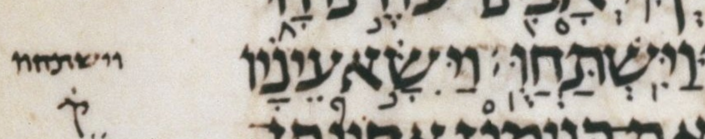

| bcv (link to tanach.us) | gn43:28 |
| MPK | וַיִּֽשְׁתַּחֲוֻּֽ׃ |
| qere | וַיִּֽשְׁתַּחֲוּֽוּ׃ |
| at issue | וּ |
| at issue English | qubuts to shuruq |
The qubuts in the MPK becomes a shuruq dot in the qere.
In WLC, this word also has a 1-note, presumably because of the unexpected dagesh in the qere’s penultimate vav.
As a reminder, a WLC 1-note (bracket-1 note) is defined as follows: «BHS has been faithful to ל [...] where there might be a question of the validity of the form and we keep the same form as BHS. (This is similar to the note “]U”, but the latter refers to cases where BHQ has been published and we keep the same form as both BHS and BHQ.)»
Although Dotan has a note on his body-text word וַיִּֽשְׁתַּחֲוּֽוּ׃, I do not take him to have noted it for the issue at hand: the qubuts-to-shuruq issue. I take him to have noted this word only for its unexpected dagesh in the qere’s penultimate vav. Compare to gn27:29 word 4, וְיִֽשְׁתַּחֲו֤וּ, not noted by Dotan, which is the qere of a ketiv/qere that is analogous to this one except it has the expected undageshed penultimate vav. Also compare to gn27:29 word 10, וְיִשְׁתַּחֲוּ֥וּ, noted by Dotan, which is a normal (non-qere) word that is analogous to this qere including its unexpected dageshed penultimate vav.